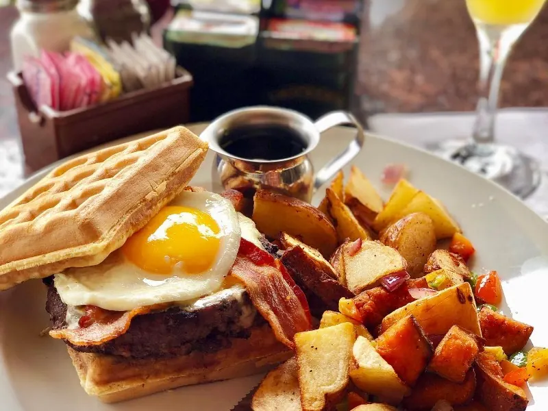

White Wolf Cafe
This is Ivanhoe Village's morning ritual. White Wolf does Southern comfort the way it should be done: the Crab Cakes Benedict that regulars dream about, French toast worth the trip alone, and a cinnamon bun famous across the neighborhood. Cheese grits, home fries, country fried chicken, the whole honest lineup. The room is art-filled and warm, the staff treats you like a neighbor, and brunch here feels like the day already started right.